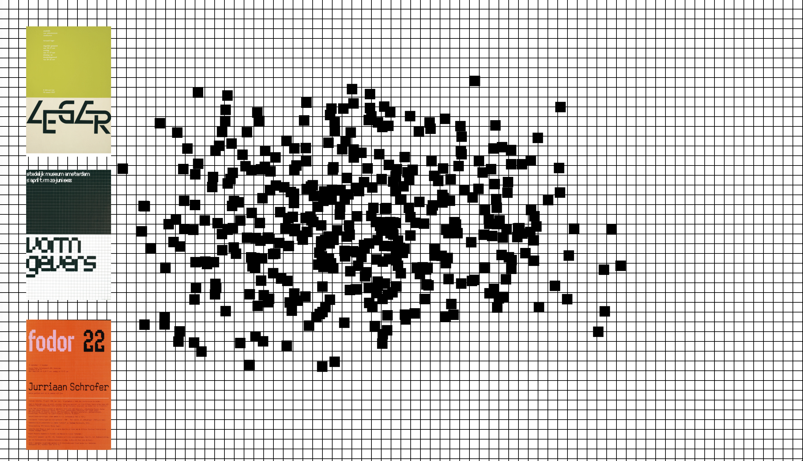
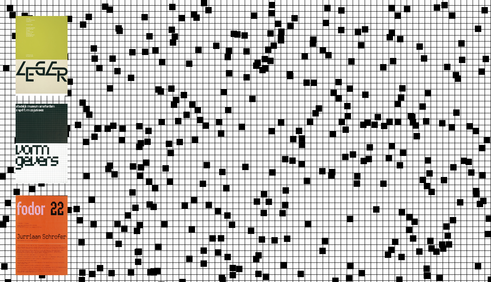
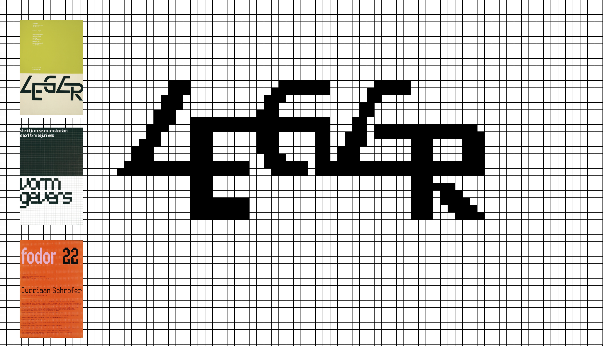
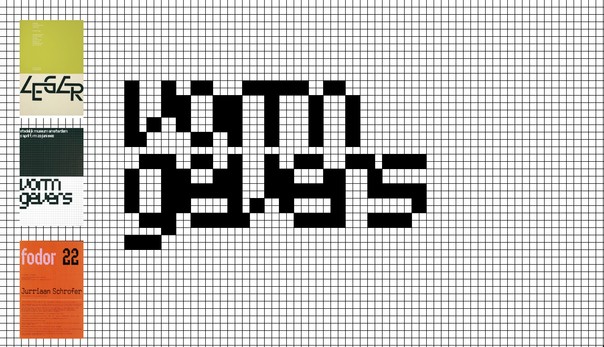
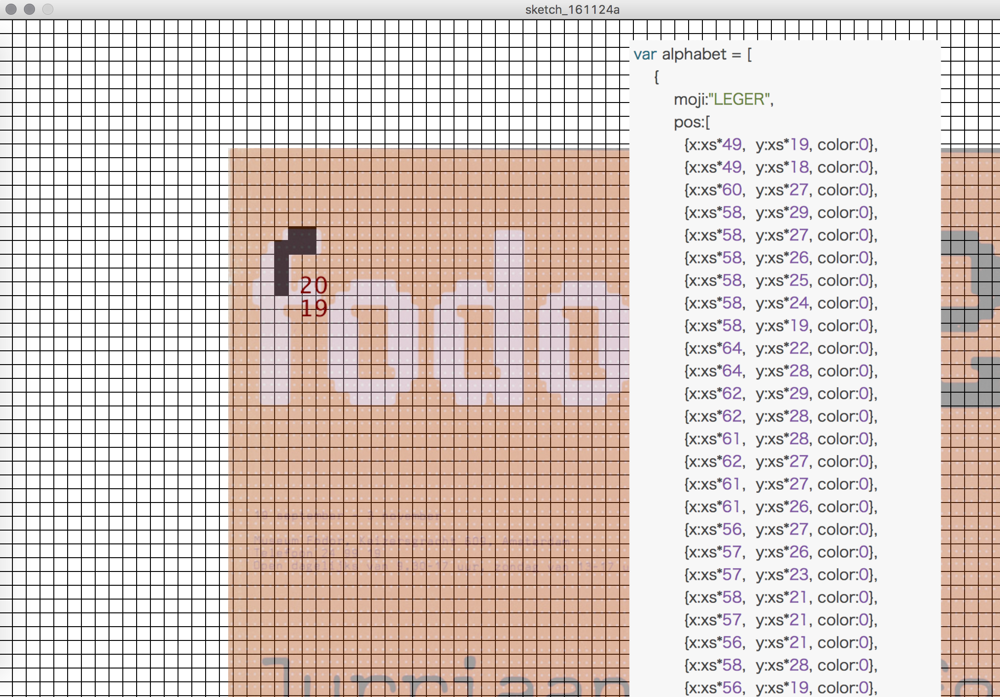
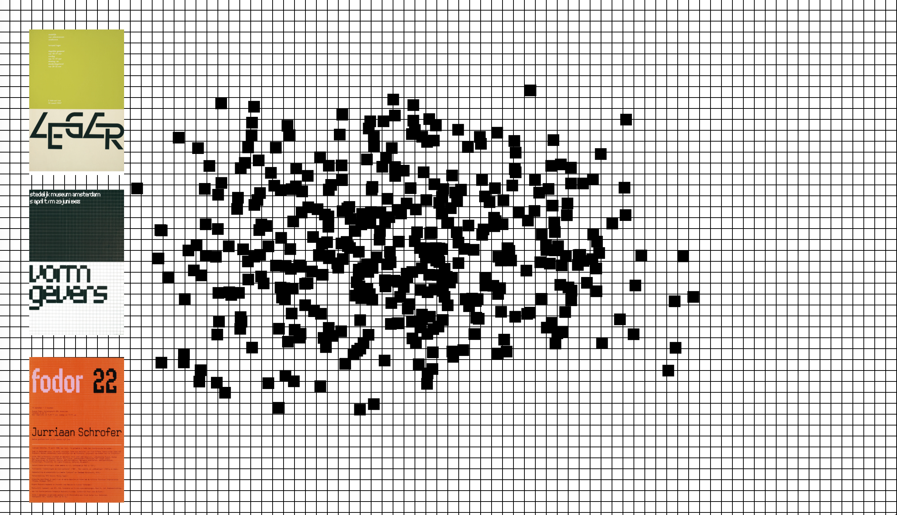
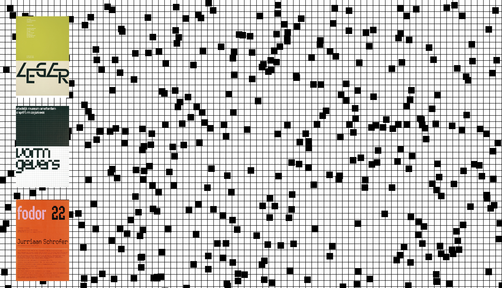
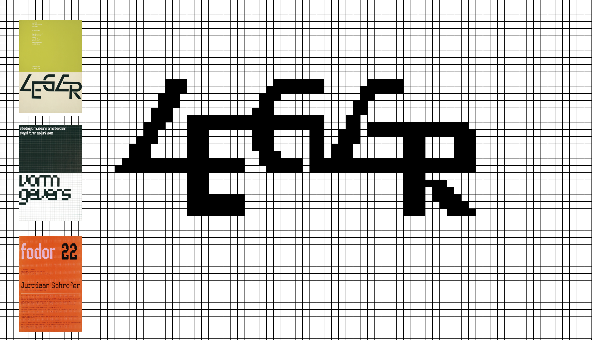
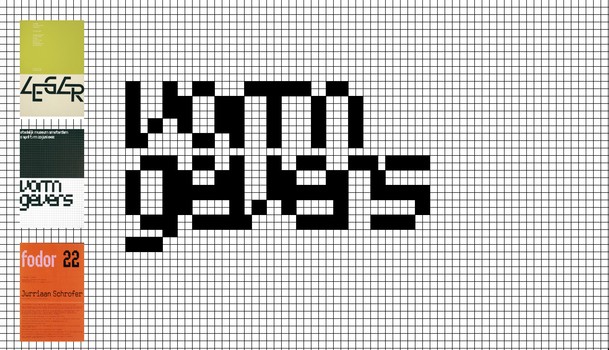
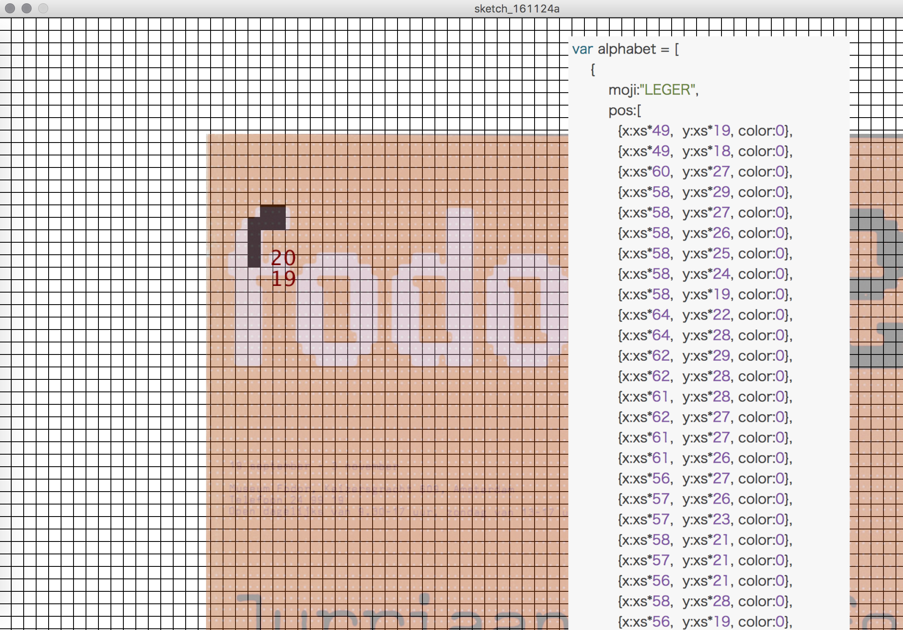

wim crowel's Grid
(2016,Webインスタレーション,個人制作)
 









概要/趣旨
オランダのグラフィックデザイナー、ウィム・クロウェルの「New Alphabet」(1967)に代
表される、直行グリッドを用いた独特な書体をWebブラウザ上でインタラクティブに表現し
ようと試みた作品です。作品のアイコンをクリックすると、画面上に散らばったグリッドが
その作品の特徴的なロゴの形に変化します。
制作に当たって考えたこと
1960年代にコンピュータの画面や液晶画面における書体の可能性を模索したものと言われる
、ウィム・クロウェルの直行グリッドを用いた書体を実際にWeb上で無数のグリッドで表示
することによって、クロウェルが当時想定した通りの書体の表現をすることができるのでは
ないかと考えました。それに際して、ロゴを形作るグリッドの座標情報を作成するため、
Processigを用いて読み込んだ画像のクリックした部分の座標をテキストファイルで保存する
ツールを作成し、効率的に座標情報の取得を行いました。
開発環境
Atom
p5.js(javascriptプラグイン)